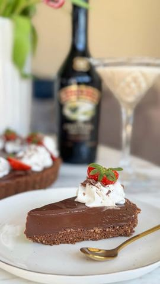

Moja beleška
Sačuvano
Ocena
Sastojci
- Podloga
- Fil
- Za dekoraciju
Priprema
Prečnik kalupa: 23 cm 1️⃣ Podloga: Pomešajte mleveni keks, kakao i otopljeni puter. Po želji dodajte mleko za kompaktniju teksturu. Utapkajte smesu u kalup i stavite u frižider dok pripremate fil. 2️⃣ Fil: Zagrejte 300 ml slatke pavlake do vrenja, pa prelijte preko iseckane crne i bele čokolade i putera. Mešajte dok se sve potpuno ne otopi i postane glatko. Dodajte 150 ml Baileys likera i sjedinite. 3️⃣ Izlijte fil preko pripremljene podloge i ostavite u zamrzivaču oko 40 minuta da se stegne. 4️⃣ Dekoracija: Umutite 100 ml slatke pavlake sa 20 ml Baileys likera i dekorišite tart. Po želji dodajte rendanu čokoladu ili sveže jagode za osveženje 🍓☺️
Originalni opis sa Instagrama
🎁 GIVEAWAY ALERT! 🎁 Ljubitelji čokolade i Baileys likera, ovo je za vas! ✨ Pripremila sam neodoljivi Baileys čokoladni tart, a uz to neko od vas osvaja prelepu, elegantnu kutiju sa TRI Baileys likera! 🥃🤍 Još lepša vest? Među njima je i Baileys Tiramisu, koji jedva čekam da neko od vas isproba! 😍 Kako da učestvujete? 👇 ✅ pratite moj @jelenadoskovic i @baileyssrbija instagram profil ✅ Lajkujte i podelite ovaj reel na svoj story ✅ U komentaru tagujte bar jednu drugaricu s kojom biste uživali u ovom savršenstvu 📅 Dobitnika objavljujem u subotu 29.03.2025. Srećno svima! 💫 A sada – recept za ovaj fantastični tart! 🍫✨ Baileys čokoladni tart 🍫🥃 Prečnik kalupa: 23 cm Sastojci: Podloga: • 300 g mlevenog keksa • 100 g otopljenog putera • 30 g kakaa • (Opciono) 100 ml mleka – za kompaktniju podlogu Fil: • 150 g crne čokolade • 150 g bele čokolade • 300 ml slatke pavlake • 150 ml Baileys likera • 50 g putera Za dekoraciju: • 100 ml slatke pavlake • 20 ml Baileys likera • Rendana čokolada, sveže jagode (po želji) Priprema: 1️⃣ Podloga: Pomešajte mleveni keks, kakao i otopljeni puter. Po želji dodajte mleko za kompaktniju teksturu. Utapkajte smesu u kalup i stavite u frižider dok pripremate fil. 2️⃣ Fil: Zagrejte 300 ml slatke pavlake do vrenja, pa prelijte preko iseckane crne i bele čokolade i putera. Mešajte dok se sve potpuno ne otopi i postane glatko. Dodajte 150 ml Baileys likera i sjedinite. 3️⃣ Izlijte fil preko pripremljene podloge i ostavite u zamrzivaču oko 40 minuta da se stegne. 4️⃣ Dekoracija: Umutite 100 ml slatke pavlake sa 20 ml Baileys likera i dekorišite tart. Po želji dodajte rendanu čokoladu ili sveže jagode za osveženje 🍓☺️ Ovaj tart je bogat, kremast i pun čokoladno-likernog savršenstva! Idealno za uživanje sa prijateljicama uz šoljicu kafe (ili čašu Baileysa 😉). Ko bi uživao u ovom desertu s tobom? Taguj ga u komentaru i učestvuj u giveaway-u! 💛✨ • • • #cokoladnitart #tart #baileys #ukusnahrana #recepti #giveaway